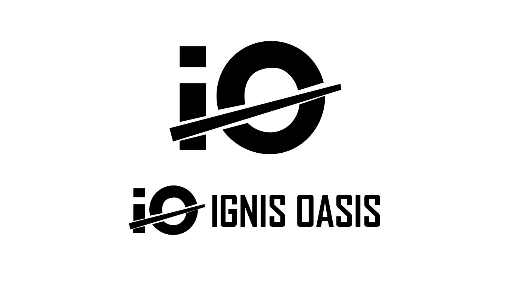
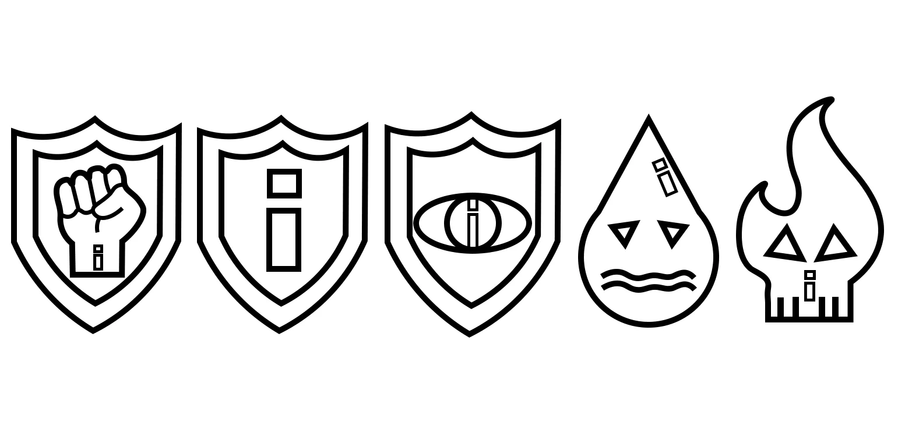
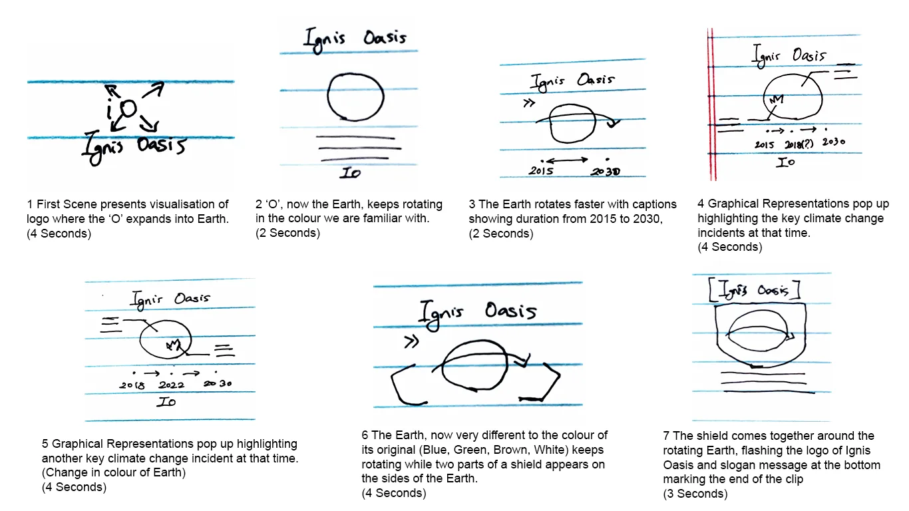

CASE STUDY 03 · CAMPAIGN AND DESIGN SYSTEM
Ignis Oasis
One rule — fire against water — carried across every surface of a climate campaign.


01 / PREMISE
More information doesn't move people
Ignis Oasis is a fictional, nonviolent protest group founded alongside the 2015 Paris Agreement. The campaign is set in 2030, after the agreement has failed. The idea came from two books by Jeff Goodell.
The audience: digital natives in their 20s and 30s, living in cities, who care about the climate but don't act on it. Giving them more facts wasn't going to change that.
MANIFESTO
- Community
- Awareness
- Action
Campaign line: "We either drown or burn." Supporting lines: "We are Together" and "We are here to stay".
02 / IDENTITY
A logo that splits the world in two
The "I" cuts the "O" — the Earth — in half. Fire (red) against water (blue) runs through the posters, the logo, the icons and even the data charts, so any single piece reads as part of the campaign.


(opens full size)

(opens full size)03 / CHANNELS
Each surface has one job
- POSTERS Awareness Make people notice.
- MOTION Spread Get shared on social media.
- WEBParticipationGive people a way to join in.
04 / MOTION
22 seconds of data, in After Effects
The logo's "O" becomes the Earth, key climate events appear around it, and two charts — sea level and surface temperature — draw themselves over a dimming planet. 1920 × 1080 at 24 fps.


(opens full size)| YEAR | SEA LEVEL (MM) | SURFACE TEMP (°C) |
|---|---|---|
| 1930 | +25 | −0.11 |
| 1950 | +75 | −0.13 |
| 1970 | +80 | 0.06 |
| 1990 | +125 | 0.45 |
| 2010 | +175 | 0.73 |
| 2030* | +250 | 1.4 |
Temperature is the difference from the 1901–2000 average. *2030 is the campaign's story year.
05 / THE SYSTEM
19 pages of rules someone else could follow
The Organisation Guidelines turn the campaign into a system: what can change, what can't, and what to do when the ideal option isn't available. It's the same job a UI design system does.
COLOUR
A 15-colour palette built from two anchors.
TYPE FALLBACK CHAIN
If the brand typeface isn't available, use the next one in the chain.
- Agency FB Bold
- Berlin Sans FB
- Arial
MINIMUM SIZE
202 × 133 px
The smallest size the logo may appear at.